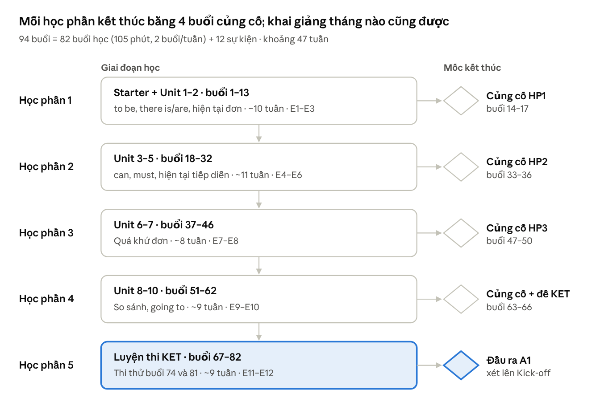

IVY Bridge-up (Pre A1 – A1) – Khung chương trình 94 buổi định hướng A2 Key for Schools
1. Tổng quan
Khóa Bridge-up đưa học sinh THCS từ Pre A1 lên A1 trong khoảng 47 tuần với 94 buổi: 82 buổi học tại lớp và 12 buổi sự kiện công dân toàn cầu. Khóa chia thành 5 học phần đánh số theo buổi, không gắn với tháng hay học kỳ của trường, nên trung tâm mở lớp vào bất kỳ thời điểm nào trong năm. Giáo trình chính là Gold Experience 2nd Edition A1 (Pearson), gồm Starter, 9 unit chủ đề và Unit 10 ôn tập theo dạng đề thi.
| Học phần | Buổi | Nội dung | Củng cố cuối học phần | Sự kiện | Thời gian |
|---|---|---|---|---|---|
| 1 · Bản thân và hiện tại đơn | 1–17 | Starter, Unit 1–2 (13 buổi) | 4 buổi: Nghe – Đọc, Nói – Viết, ngữ pháp + kiểm tra, linh hoạt | E1–E3 | ~10 tuần |
| 2 · Hiện tại mở rộng | 18–36 | Unit 3–5 (15 buổi) | 4 buổi | E4–E6 | ~11 tuần |
| 3 · Quá khứ | 37–50 | Unit 6–7 (10 buổi) | 4 buổi | E7–E8 | ~8 tuần |
| 4 · So sánh và tương lai | 51–66 | Unit 8–10 (12 buổi) | 4 buổi, kiểm tra bằng đề KET đầy đủ | E9–E10 | ~9 tuần |
| 5 · Luyện thi KET | 67–82 | Luyện theo part, đánh giá ngữ pháp cuối khóa, 2 lần thi thử | — | E11–E12 | ~9 tuần |
| Tổng | 82 buổi học + 12 sự kiện = 94 | Mỗi buổi học 105 phút, 2 buổi/tuần | ~47 tuần |
Học phần được chia theo trục ngữ pháp (hiện tại → hiện tại mở rộng → quá khứ → so sánh, tương lai), nên mỗi học phần kết thúc bằng một lần củng cố trọn một mảng ngữ pháp. Buổi linh hoạt cuối mỗi học phần chia lớp thành nhóm bù và nhóm tăng cường theo kết quả kiểm tra, để học sinh yếu không bị kéo theo tiến độ và học sinh khá không phải chờ. Khi lớp nghỉ lễ dài, bài tập về nhà nhẹ vẫn duy trì; buổi linh hoạt dùng để bù nếu lớp chậm tiến độ.
2. Mục tiêu đầu ra
Cuối khóa, học sinh đạt A1 đều ở 4 kỹ năng (tương ứng Level A1, 100–119 điểm trên đề A2 Key for Schools), nắm vững 25 điểm ngữ pháp nền theo mức quy định, có vốn khoảng 1.000 từ, và thể hiện được 6 năng lực sống ở mức phù hợp tuổi.
Bốn kỹ năng (đo bằng bài thi thử và rubric)
| Kỹ năng | Học sinh làm được | Tiêu chí đạt |
|---|---|---|
| Nghe | Lấy số, tên, giờ, địa điểm, hoạt động từ hội thoại và thông báo ngắn; chọn tranh đúng | ≥ 50% bài Listening thi thử KET |
| Đọc | Hiểu bài 100–150 từ về chủ đề quen thuộc; làm điền từ, chọn đáp án, nối thông tin | ≥ 50% phần Reading thi thử KET |
| Nói | Giới thiệu bản thân, hỏi – đáp về thói quen, kể chuyện theo 4–6 tranh, nêu ý kiến kèm because | Đạt A1 theo rubric 4 tiêu chí |
| Viết | Tin nhắn, bưu thiếp, mô tả, truyện theo tranh 35–50 từ, có liên từ and, but, because, then | Đạt A1 theo rubric 4 tiêu chí |
Nền tảng ngữ pháp (đánh giá theo mức nắm vững của từng điểm ngữ pháp, không theo điểm số bài kiểm tra). Ba mức: Tự động = dùng đúng ở ≥ 80% lần xuất hiện khi nói và viết tự do · Có kiểm soát = đúng ≥ 80% trong bài tập có cấu trúc và khi có gợi ý · Nhận biết = hiểu đúng nghĩa khi đọc, nghe ở ≥ 8/10 câu. Học sinh làm bài chẩn đoán ở buổi 3 và bài đánh giá cuối khóa ở buổi 73 trên cùng 25 điểm; mục tiêu là đạt đúng mức ở ≥ 22/25 điểm.
| # | Điểm ngữ pháp | Học phần | Mức cuối khóa |
|---|---|---|---|
| 1 | to be; đại từ nhân xưng | 1 | Tự động |
| 2 | Tính từ sở hữu, sở hữu cách 's | 1 | Tự động |
| 3 | this, that, these, those | 1 | Tự động |
| 4 | a/an/the; danh từ số nhiều | 1 | Có kiểm soát |
| 5 | there is/are + some/any | 1 | Tự động |
| 6 | have got | 1 | Có kiểm soát |
| 7 | Hiện tại đơn: khẳng định, phủ định, câu hỏi, -s ngôi thứ ba | 1 | Tự động |
| 8 | Giới từ nơi chốn; in/on/at chỉ thời gian | 1 | Có kiểm soát |
| 9 | Trạng từ tần suất và vị trí trong câu | 2 | Tự động |
| 10 | Từ để hỏi Wh- | 2 | Tự động |
| 11 | Câu mệnh lệnh; must/mustn't | 2 | Có kiểm soát |
| 12 | can/can't; đại từ tân ngữ | 2 | Tự động (can) · Có kiểm soát (đại từ tân ngữ) |
| 13 | Hiện tại tiếp diễn; phân biệt với hiện tại đơn | 2 | Có kiểm soát |
| 14 | Đếm được – không đếm được; a/some/any; much/many | 2 | Có kiểm soát |
| 15 | was/were; there was/were | 3 | Tự động |
| 16 | Quá khứ đơn có quy tắc, phát âm -ed | 3 | Tự động |
| 17 | Quá khứ đơn bất quy tắc (khoảng 40 động từ thường gặp) | 3 | Có kiểm soát |
| 18 | Câu hỏi và phủ định ở quá khứ | 3 | Có kiểm soát |
| 19 | Liên từ and, but, because, so, when; first, then, after that | 2–3 | Tự động (and, but, because) · Có kiểm soát (so, when) |
| 20 | So sánh hơn | 4 | Có kiểm soát |
| 21 | So sánh nhất | 4 | Có kiểm soát |
| 22 | be going to | 4 | Có kiểm soát |
| 23 | like/love + V-ing; want to + V | 4 | Có kiểm soát |
| 24 | Trật tự từ trong câu đơn, câu ghép | Cả khóa | Tự động |
| 25 | Cấu trúc A2 thường gặp trong đề KET: will, have to, could, should, present perfect với ever | 5 | Nhận biết |
Năng lực công dân toàn cầu (theo Khung năng lực sống của Cambridge, đánh giá qua dự án và sự kiện)
| Năng lực | Biểu hiện mong đợi ở học sinh Bridge-up |
|---|---|
| Giao tiếp | Nói rõ, lịch sự; biết hỏi lại khi không hiểu; trình bày 1 phút trước lớp |
| Hợp tác | Nhận vai trong nhóm, chia việc, lắng nghe và phản hồi ý bạn |
| Tư duy phản biện | So sánh, phân loại thông tin, đưa lý do cho ý kiến |
| Tư duy sáng tạo | Đưa ra ý tưởng mới cho dự án, thử nhiều cách giải quyết |
| Học cách học | Tự lập thời gian biểu, đặt mục tiêu cá nhân, tự chấm bài theo rubric |
| Trách nhiệm xã hội | Hiểu văn hóa mình và người khác; hành động nhỏ vì môi trường, cộng đồng |
3. Lộ trình 94 buổi
Khóa đi theo 5 học phần đánh số theo buổi; tuần 1 là tuần khai giảng của lớp, không phụ thuộc tháng trong năm. Mỗi học phần kết thúc bằng 4 buổi củng cố và một bài kiểm tra theo định dạng KET.

Lộ trình Bridge-up · 5 giai đoạn, 94 buổi
Các part KET dễ được đưa vào ngay từ học phần 1 bằng A2 Key for Schools Trainer 1, nên đến học phần 5 học sinh đã làm quen đủ 14 part và chỉ còn luyện chiến lược, tốc độ.
4. Sub-skills KET cần cover
Khóa chuẩn bị cho A2 Key for Schools (KET) bằng 18 sub-skill tách từ 14 part của đề. Part dễ (R1, L1, L2, S1, W1) được dạy từ học phần 1; part khó (R3, L3, L4, S4, W2) vào từ học phần 2–3. Mỗi sub-skill được luyện ít nhất 4 lần trước thi thử lần 1 ở buổi 74.
Định dạng đề (Cambridge English): Reading and Writing 60 phút, 7 part, 32 câu, 50% điểm · Listening khoảng 30 phút, 5 part, 25 câu, mỗi bài nghe 2 lần · Speaking 8–10 phút theo cặp, 2 part. Điểm 100–119 trên thang Cambridge English Scale nhận chứng chỉ Level A1, từ 120 nhận chứng chỉ A2 (Cambridge).
| Mã | Sub-skill | Part KET | Buổi luyện chính | Mức đạt ở thi thử lần 2 |
|---|---|---|---|---|
| R1 | Hiểu ý chính, mục đích của biển báo, tin nhắn, email ngắn | R&W Part 1 (6 câu, chọn A/B/C) | 4, 14, 16, 23, 63, 67 | ≥ 4/6 |
| R2 | Đọc lướt tìm thông tin cụ thể, so khớp 3 văn bản ngắn | R&W Part 2 (7 câu nối) | 18, 33, 35, 42, 56, 67 | ≥ 4/7 |
| R3 | Đọc hiểu chi tiết, ý kiến, thái độ trong bài dài | R&W Part 3 (5 câu trắc nghiệm) | 28, 42, 47, 49, 68 | ≥ 3/5 |
| R4 | Chọn từ vựng đúng ngữ cảnh: kết hợp từ, từ gần nghĩa | R&W Part 4 (điền từ trắc nghiệm, 6 câu) | 9, 37, 47, 49, 51, 61, 69 | ≥ 3/6 |
| R5 | Điền từ chức năng: giới từ, đại từ, trợ động từ, mạo từ | R&W Part 5 (điền từ tự do, 6 câu) | 4, 8, 13, 16, 22, 27, 32, 35, 41, 46, 55, 60, 63, 68, 73 | ≥ 3/6 |
| W1 | Viết email, tin nhắn ≥ 25 từ trả lời đủ 3 ý | R&W Part 6 | 3, 7, 12, 15, 16, 21, 26, 31, 34, 59, 62, 64, 69, 78 | Đủ 3 ý, người đọc hiểu được |
| W2 | Viết truyện ≥ 35 từ theo 3 tranh: trình tự, thì quá khứ, liên từ | R&W Part 7 | 40, 45, 48, 49, 54, 64, 69, 73, 78 | Đủ 3 tranh, có liên từ |
| W3 | Chính xác: chính tả, viết hoa, dấu câu | Part 6–7, Listening Part 2 | 2, 3, 7, 12, 21, 26, 78 | ≤ 3 lỗi mỗi bài viết |
| L1 | Nghe số, giờ, giá, đồ vật để chọn tranh | Listening Part 1 (5 câu) | 5, 14, 16, 24, 29, 38, 63, 70 | ≥ 3/5 |
| L2 | Nghe ghi chép: số, ngày, tên được đánh vần | Listening Part 2 (5 câu điền) | 1, 2, 10, 14, 16, 24, 43, 63, 70 | ≥ 3/5 |
| L3 | Nghe chi tiết trong hội thoại dài | Listening Part 3 (5 câu trắc nghiệm) | 38, 47, 49, 61, 63, 70 | ≥ 3/5 |
| L4 | Nghe ý chính, mục đích, cảm xúc người nói | Listening Part 4 (5 đoạn ngắn) | 50, 52, 57, 71 | ≥ 3/5 |
| L5 | Nghe nối người với vật, hoạt động | Listening Part 5 (5 câu nối) | 19, 29, 33, 35, 71 | ≥ 3/5 |
| S1 | Trả lời câu hỏi cá nhân ngắn | Speaking Part 1, phase 1 | 1, 6, 11, 15, 25, 34, 64, 72 | Trả lời đúng, đủ câu |
| S2 | Nói dài hơn về bản thân, có lý do với because | Speaking Part 1, phase 2 | 11, 15, 20, 34, 44, 72 | 2–3 câu cho mỗi câu hỏi |
| S3 | Thảo luận với bạn theo tranh: thích, không thích, hỏi ý bạn | Speaking Part 2, phase 1 | 20, 25, 30, 39, 48, 53, 58, 62, 64, 72 | Hỏi bạn ≥ 2 lần, nêu lý do |
| S4 | Trả lời câu hỏi mở rộng của giám khảo | Speaking Part 2, phase 2 | 39, 44, 48, 58, 64, 72 | Trả lời có lý do |
| S5 | Phát âm rõ: âm cuối, -s/-ed, trọng âm từ | Cả 2 part | 6, 15, 38, 72, 79 | Giám khảo hiểu không cần hỏi lại |
| E | Kỹ thuật làm bài: thời gian, phiếu trả lời, đoán thông minh | Cả 3 bài thi | 16, 35, 49, 65, 67, 74, 75, 81 | Không bỏ trống câu nào |
5. Chi tiết 82 buổi học tại lớp
Mỗi unit gồm 4 buổi theo kỹ năng, như cách IVY đang dạy, cộng 1 buổi Ôn tập và Dự án. Ngữ pháp 2 của sách được dạy ở đầu buổi Nói, vì nhiệm vụ Nói của sách dùng chính cấu trúc đó. Ngữ pháp có dấu (+) là phần bổ trợ ngoài sách.
| Loại buổi (105 phút) | Phân bổ thời gian |
|---|---|
| B1 · Reading + Grammar 1 | Khởi động, chữa bài nhà 10' · từ vựng của bài đọc 15' · đọc hiểu theo dạng bài của sách 30' · Grammar 1: tìm quy tắc từ bài đọc, luyện có kiểm soát 35' · phiếu cuối buổi 15' |
| B2 · Listening + Vocabulary | Ôn nhanh Grammar 1 10' · Vocabulary 2: giới thiệu, luyện, trò chơi 35' · nghe theo dạng bài của sách, dạy chiến lược 40' · luyện phát âm từ mới 10' · phiếu cuối buổi 10' |
| B3 · Speaking (+ Grammar 2) | Grammar 2: trình bày, luyện có kiểm soát 30' · mẫu hội thoại, cụm từ chức năng 15' · nhiệm vụ Nói của sách theo cặp 30' · nói mở rộng, đóng vai 20' · nhận xét theo rubric 10' |
| B4 · Writing | Ôn ngôn ngữ của unit 10' · phân tích bài mẫu 20' · dàn ý 15' · viết trên lớp 35' · chấm chéo theo rubric, sửa lỗi chung 25' |
| B5 · Ôn tập và Dự án | Grammar Foundation (+) 35' · Unit check 25' · video Switch on 15' · trình bày dự án unit 30' |
Ký hiệu: SB = Gold Experience 2nd Ed. A1 Student's Book · GF = Grammar file cuối SB · OGS1/OGS2 = Oxford Grammar for Schools 1/2 · T1 = A2 Key for Schools Trainer 1, 2nd edition cho đề từ 2020 (Cambridge, 6 đề; Test 1–2 có phần Training) · KfS1 = A2 Key for Schools 1, đề chính thức cho đề từ 2020 (Cambridge, 4 đề) · R1–R5, W1–W3, L1–L5, S1–S5, E = mã sub-skill ở mục 4. Trang có dấu * là trang suy ra (trang trong unit SB, trang từng part trong T1 và KfS1); trang bắt đầu mỗi đề của T1 và KfS1 lấy theo mục lục sách. Bài về nhà mọi buổi: Workbook và Online Practice phần tương ứng của unit, cộng 1 part KET cùng sub-skill của buổi.
Học phần 1 · Bản thân và hiện tại đơn · Buổi 1–17 (khoảng 10 tuần, gồm sự kiện E1–E3)
| Buổi | Bài học (sách, trang) | Ngôn ngữ trọng tâm | Sub-skill KET | Mục tiêu SMART (cuối buổi, ≥ 80% học sinh đạt) | Bổ trợ để đủ 105 phút (tài liệu, trang) | Công dân toàn cầu |
|---|---|---|---|---|---|---|
| 1 | Starter · SB tr. 6–7* | to be; đại từ nhân xưng; gia đình, số đếm | S1, L2 | Trả lời đúng 5 câu hỏi cá nhân kiểu Speaking Part 1; đánh vần đúng tên mình và 1 bạn | OGS1 U5 Subject pronouns tr. 24–27; OGS1 U6 Be tr. 30–34 | Cả lớp xây nội quy lớp học |
| 2 | Starter · SB tr. 8–9* | Tính từ sở hữu, 's; bảng chữ cái, tháng, quốc tịch | L2, W3 | Nghe chép đúng ≥ 4/5 tên được đánh vần và ngày tháng; ≥ 4/5 câu đúng với tính từ sở hữu, 's | OGS1 U8 Possessive adjectives tr. 42–46; OGS1 U1 Letters tr. 6 | Lớp em trên bản đồ thế giới |
| 3 | Starter · SB tr. 10* + GF tr. 114–115* | Thông tin cá nhân | W1, W3 | Viết tin nhắn ≥ 25 từ giới thiệu bản thân, đủ 3 ý, ≤ 2 lỗi viết hoa; 100% làm bài chẩn đoán ngữ pháp | Bài chẩn đoán 30' (25 điểm ngữ pháp ở mục 2) | — |
| 4 | U1 Come in · Reading + Grammar 1 · SB tr. 11–14 | Đồ vật, giới từ (tr. 12); there is/are + some/any (tr. 14) | R1, R5 | Đúng ≥ 4/6 câu đọc biển báo, tin nhắn ngắn; viết 5 câu tả phòng, ≥ 4 câu đúng | T1 Test 1 R&W Part 1 – Training tr. 10–12; OGS1 U16 There's, there are tr. 85 | — |
| 5 | U1 · Listening + Vocabulary · SB tr. 15, 17* | Từ vựng ngôi nhà (tr. 15) | L1 | Đúng ≥ 4/5 câu nghe chọn tranh; gọi tên đúng ≥ 10/12 từ | T1 Test 1 Listening Part 1 – Training tr. 28–30* | Nhà ở các nền văn hóa |
| 6 | U1 · Speaking (+ Grammar 2) · SB tr. 16, 18* | have got (tr. 16); gọi điện thoại | S1, S5 | Hỏi – đáp 6 câu have got, ≥ 5 câu đúng; phát âm rõ âm cuối | T1 Test 1 Speaking Part 1 tr. 40–41*; OGS1 U7 Have got tr. 35–39 | — |
| 7 | U1 · Writing · SB tr. 19* | Viết hoa, dấu câu | W1, W3 | Viết email ≥ 25 từ về phòng mới, trả lời đủ 3 câu hỏi của đề, ≤ 3 lỗi | T1 Test 1 R&W Part 6 tr. 25–26*; SB Speaking and writing file tr. 134–142 | — |
| 8 | U1 · Ôn tập và Dự án · SB tr. 20* + GF tr. 116–117* | Switch on: Tiny house tour | R5 | Đạt ≥ 70% unit check U1; điền đúng a/an/the, số nhiều ở ≥ 8/10 chỗ | Grammar Foundation: OGS1 U3 Articles tr. 15–18; OGS1 U4 Plurals tr. 19–23 | Sống gọn, dùng ít tài nguyên |
| 9 | U2 What a week! · Reading + Grammar 1 · SB tr. 21–24 | Hoạt động hằng ngày (tr. 22); hiện tại đơn (tr. 24) | R4 | Đúng ≥ 6/8 câu điền từ của SB và ≥ 3/6 câu T1 Part 4 | T1 Test 1 R&W Part 4 tr. 21–22*; OGS1 U12 Present simple tr. 62–67 | — |
| 10 | U2 · Listening + Vocabulary · SB tr. 25, 27* | Hoạt động thời gian rảnh (tr. 25) | L2 | Nghe điền đúng ≥ 4/5 số, giờ, ngày | T1 Test 1 Listening Part 2 tr. 31–32* | — |
| 11 | U2 · Speaking (+ Grammar 2) · SB tr. 26, 28* | Câu hỏi Do/Does (tr. 26) | S1, S2 | Trả lời "Tell me about your school day" bằng ≥ 3 câu, có 1 lý do với because | SB Pairwork file tr. 143; OGS1 U12 tr. 62–67 (câu hỏi) | So sánh ngày học ở các nước |
| 12 | U2 · Writing · SB tr. 29* | Câu hỏi; dấu câu | W1, W3 | Viết email ≥ 25 từ hỏi bạn 3 câu, đúng trật tự từ ở ≥ 2/3 câu hỏi | SB Speaking and writing file (phần U2) | — |
| 13 | U2 · Ôn tập và Dự án · SB tr. 30* + GF tr. 118–119* | Switch on: Kung Fu School | R5 | Đạt ≥ 70% unit check U2; điền đúng in/on/at ở ≥ 8/10 chỗ | Grammar Foundation: OGS1 U25 Prepositions of time tr. 125–127 | Quyền được đi học |
| 14 | Củng cố · Nghe – Đọc | Starter–U2 | R1, L1, L2 | Đúng ≥ 4/6 câu R&W Part 1; ≥ 3/5 câu mỗi phần Listening Part 1–2 | T1 Test 1 R&W Part 1 – Exam practice tr. 13; T1 Test 1 Listening Part 1–2 – Exam practice tr. 28–32* | — |
| 15 | Củng cố · Nói – Viết + kiểm tra Nói HP1 | Starter–U2 | S1, S2, S5, W1 | Mỗi học sinh thi Speaking Part 1 với giáo viên, trả lời đủ 6 câu; viết 1 email Part 6 đủ 3 ý | T1 Test 1 Speaking Part 1 tr. 40–41*; T1 Test 1 R&W Part 6 tr. 25–26* | — |
| 16 | Củng cố ngữ pháp nền + kiểm tra học phần 1 | be, have got, there is/are, sở hữu, hiện tại đơn, giới từ | R1, R5, W1, L1, L2, E | Ôn ngữ pháp 40'; kiểm tra 60': ≥ 50% mỗi part KET, ≥ 80% câu ngữ pháp ở mức "dùng có kiểm soát" | OGS1 Revision 1 tr. 28–29; Revision 2 tr. 40–41 · Kiểm tra: T1 Test 3 R&W Part 1 và 6, Listening Part 1–2 + 20 câu ngữ pháp | — |
| 17 | Linh hoạt 1: bù hoặc tăng cường | Theo kết quả buổi 16 | Theo học sinh | Nhóm bù: làm lại điểm ngữ pháp chưa đạt, đúng ≥ 80%; nhóm tăng cường: viết email ≥ 35 từ, đọc 1 truyện ngắn | Nhóm bù: OGS1 U12 tr. 62–67 (bài ★★★), Mini-revision tr. 74, Revision 9 tr. 128 · Nhóm tăng cường: sách đọc phân cấp Starter | — |
Học phần 2 · Hiện tại mở rộng · Buổi 18–36 (khoảng 11 tuần, gồm sự kiện E4–E6)
| Buổi | Bài học (sách, trang) | Ngôn ngữ trọng tâm | Sub-skill KET | Mục tiêu SMART (cuối buổi, ≥ 80% học sinh đạt) | Bổ trợ để đủ 105 phút (tài liệu, trang) | Công dân toàn cầu |
|---|---|---|---|---|---|---|
| 18 | U3 Animal magic · Reading + Grammar 1 · SB tr. 31–34 | Động vật (tr. 32); trạng từ tần suất (tr. 34) | R2 | Đúng ≥ 4/7 câu nối thông tin giữa 3 đoạn văn; đặt trạng từ tần suất đúng vị trí ở ≥ 4/5 câu | T1 Test 1 R&W Part 2 – Training tr. 14–15; OGS2 U28 Adverbs tr. 126–129 | — |
| 19 | U3 · Listening + Vocabulary · SB tr. 35, 37* | Thế giới quanh ta (tr. 35) | L5 | Đúng ≥ 3/5 câu nghe nối người với vật | T1 Test 1 Listening Part 5 tr. 37–39* | — |
| 20 | U3 · Speaking (+ Grammar 2) · SB tr. 36, 38* | Từ để hỏi (tr. 36) | S2, S3 | Thảo luận theo cặp về 5 tranh động vật trong 2 phút, hỏi ý bạn ≥ 2 lần | T1 Test 1 Speaking Part 2 tr. 42–43*; OGS2 U16 Question words tr. 78–80 | Nêu lý do cho ý kiến |
| 21 | U3 · Writing · SB tr. 39* | and, but, because | W1, W3 | Viết email ≥ 25 từ về con vật em thích, đủ 3 ý, có and/but/because | OGS2 U25 And, but, or, because tr. 115–116 | — |
| 22 | U3 · Ôn tập và Dự án · SB tr. 40* + GF tr. 120–121* | Switch on: Panda protection | R5 | Đạt ≥ 70% unit check U3; điền đúng do/does, trợ động từ ở ≥ 8/10 chỗ | Grammar Foundation: OGS2 U11 Present simple tr. 49–54 | Bảo vệ loài quý hiếm |
| 23 | U4 Let's explore · Reading + Grammar 1 · SB tr. 43–46 | Địa điểm (tr. 44); mệnh lệnh, must/mustn't (tr. 46) | R1 | Đúng ≥ 4/6 câu đọc biển báo; viết 5 quy tắc với must/mustn't, ≥ 4 câu đúng | T1 Test 2 R&W Part 1 (tr. 44–47*); OGS1 U15 The imperative tr. 79–82 | Quy tắc nơi công cộng |
| 24 | U4 · Listening + Vocabulary · SB tr. 47, 49* | Phương tiện giao thông (tr. 47) | L1, L2 | Đúng ≥ 4/5 câu chọn tranh; điền đúng ≥ 3/5 thông tin | T1 Test 2 Listening Part 1–2 (tr. 62–65*) | — |
| 25 | U4 · Speaking (+ Grammar 2) · SB tr. 48, 50* | can/can't, đại từ tân ngữ (tr. 48) | S1, S3 | Hỏi – đáp 6 câu với can, ≥ 5 câu đúng; thảo luận chọn nơi đi chơi, hỏi ý bạn ≥ 2 lần | OGS2 U19 Can, could tr. 91–94; SB Pairwork file tr. 143 | Hỏi lại khi chưa hiểu |
| 26 | U4 · Writing · SB tr. 51* | Ghi chú, tin nhắn | W1, W3 | Viết tin nhắn hẹn bạn ≥ 25 từ: nơi gặp, giờ, mang theo gì | T1 Test 1 R&W Part 6 – Exam practice tr. 25–26* | — |
| 27 | U4 · Ôn tập và Dự án · SB tr. 52* + GF tr. 122–123* | Switch on: School journeys | R5 | Đạt ≥ 70% unit check U4; điền đúng giới từ chỉ đường ở ≥ 8/10 chỗ | Grammar Foundation: OGS1 U24 Prepositions of place tr. 122–124 | An toàn giao thông |
| 28 | U5 Fun with food · Reading + Grammar 1 · SB tr. 53–56 | Đồ ăn (tr. 54); hiện tại tiếp diễn (tr. 56) | R3 | Trả lời đúng ≥ 5/6 câu hỏi bài đọc SB và ≥ 3/5 câu T1 Part 3 | T1 Test 1 R&W Part 3 tr. 18–20; OGS2 U12 Present continuous tr. 55–59 | Tôn trọng phong tục khác mình |
| 29 | U5 · Listening + Vocabulary · SB tr. 57, 59* | Thời tiết (tr. 57) | L1, L5 | Đúng ≥ 4/5 câu nghe nối của SB; ≥ 3/5 câu Listening Part 5 | T1 Test 2 Listening Part 5 (tr. 70–73*) | — |
| 30 | U5 · Speaking (+ Grammar 2) · SB tr. 58, 60* | Đếm được – không đếm được (tr. 58) | S3 | Thảo luận chọn món cho bữa tiệc từ 5 tranh, hỏi ý bạn ≥ 2 lần, nêu ≥ 2 lý do | T1 Test 2 Speaking Part 2 tr. 76–77*; OGS2 U18 Countable and uncountable tr. 85–88 | — |
| 31 | U5 · Writing · SB tr. 61* | Lời mời, ghi chú | W1 | Viết email mời bạn dự tiệc ≥ 25 từ, đủ 3 ý | T1 Test 2 R&W Part 6 (tr. 58–59*) | Chia việc khi tổ chức sự kiện |
| 32 | U5 · Ôn tập và Dự án · SB tr. 62* + GF tr. 124–125* | Switch on: Frozen Museum | R5 | Đạt ≥ 70% unit check U5; chọn đúng hiện tại đơn hay tiếp diễn ở ≥ 8/10 câu | Grammar Foundation: OGS2 U13 Present simple and present continuous tr. 60–63 | Giảm lãng phí thực phẩm |
| 33 | Củng cố · Nghe – Đọc | U3–U5 | R2, L5 | Đúng ≥ 4/7 câu R&W Part 2; ≥ 3/5 câu Listening Part 5 | T1 Test 1 R&W Part 2 – Exam practice tr. 16–17; SB tr. 41–42*; T1 Test 6 Listening Part 5 (tr. 140–141*) | — |
| 34 | Củng cố · Nói – Viết + kiểm tra Nói HP2 | U3–U5 | S1, S2, W1 | Mỗi cặp thi Speaking Part 1 và 2 với giáo viên; viết email Part 6 trong 10 phút | T1 Test 2 Speaking Part 1 tr. 74–75* | — |
| 35 | Củng cố ngữ pháp nền + kiểm tra học phần 2 | Tần suất; từ để hỏi; can, must; hiện tại tiếp diễn; đếm được – không đếm được | R2, R5, L5, E | Ôn ngữ pháp 40'; kiểm tra 60': ≥ 50% mỗi part KET, ≥ 80% câu ngữ pháp ở mức "dùng có kiểm soát" | OGS2 Mini-revision tr. 64; OGS2 Revision 4 tr. 89–90 · Kiểm tra: T1 Test 3 R&W Part 2 và 5, Listening Part 5 + 20 câu ngữ pháp | — |
| 36 | Linh hoạt 2: bù hoặc tăng cường | Theo kết quả buổi 35 | Theo học sinh | Nhóm bù: làm lại điểm ngữ pháp chưa đạt, đúng ≥ 80%; nhóm tăng cường: viết truyện 35 từ theo tranh lần đầu | Nhóm bù: OGS2 U16 tr. 78–80, U19 tr. 91–94, U20 Must, have to · Nhóm tăng cường: SB Speaking and writing file | — |
Học phần 3 · Quá khứ · Buổi 37–50 (khoảng 8 tuần, gồm sự kiện E7–E8)
| Buổi | Bài học (sách, trang) | Ngôn ngữ trọng tâm | Sub-skill KET | Mục tiêu SMART (cuối buổi, ≥ 80% học sinh đạt) | Bổ trợ để đủ 105 phút (tài liệu, trang) | Công dân toàn cầu |
|---|---|---|---|---|---|---|
| 37 | U6 Back in time · Reading + Grammar 1 · SB tr. 63–66 | Tính từ (tr. 64); was/were (tr. 66) | R4 | Đúng ≥ 6/8 chỗ trống SB; ≥ 3/6 câu T1 Part 4 | T1 Test 2 R&W Part 4 (tr. 52–54*); OGS2 U14 Past simple: be tr. 65–68 | — |
| 38 | U6 · Listening + Vocabulary · SB tr. 67, 69* | Động từ (tr. 67); phát âm -ed | L1, L3, S5 | Đúng ≥ 4/5 câu chọn tranh SB; ≥ 3/5 câu Listening Part 3; phát âm đúng -ed ở ≥ 8/10 động từ | T1 Test 1 Listening Part 3 tr. 33–34* | — |
| 39 | U6 · Speaking (+ Grammar 2) · SB tr. 68, 70* | Quá khứ đơn có quy tắc (tr. 68) | S3, S4 | Thảo luận về tranh cuộc sống xưa 2 phút, rồi trả lời 2 câu hỏi mở rộng có lý do | OGS2 U15 Past simple tr. 69–74 (có quy tắc); SB Pairwork file tr. 143 | Hỗ trợ bạn khi bạn bí ý |
| 40 | U6 · Writing · SB tr. 71* | Quá khứ đơn; first, then | W2 | Viết truyện ≥ 35 từ theo 3 tranh, mỗi tranh ≥ 1 câu, ≥ 4 động từ quá khứ đúng | T1 Test 1 R&W Part 7 tr. 27* | — |
| 41 | U6 · Ôn tập và Dự án · SB tr. 72* + GF tr. 126–127* | Switch on: Frontier House | R5 | Đạt ≥ 70% unit check U6; điền đúng was/were, there was/were ở ≥ 8/10 chỗ | Grammar Foundation: OGS2 Mini-revision tr. 75 | Di sản quê hương |
| 42 | U7 Bright sparks · Reading + Grammar 1 · SB tr. 75–78 | Nghề nghiệp (tr. 76); quá khứ bất quy tắc, câu hỏi (tr. 78) | R2, R3 | Đúng ≥ 6/8 câu SB; ≥ 3/5 câu T1 Part 3; viết đúng ≥ 12/15 động từ bất quy tắc | T1 Test 2 R&W Part 3 (tr. 50–51*); SB Irregular verb list tr. 151 | Thiếu niên tạo thay đổi |
| 43 | U7 · Listening + Vocabulary · SB tr. 79, 81* | Động từ bất quy tắc (tr. 79) | L2 | Nghe điền đúng ≥ 3/5 thông tin Listening Part 2, không sai chính tả | T1 Test 2 Listening Part 2 (tr. 64–65*) | — |
| 44 | U7 · Speaking (+ Grammar 2) · SB tr. 80, 82* | Câu hỏi quá khứ (tr. 80); first, then | S2, S4 | Trả lời "Tell me about your last weekend" bằng ≥ 4 câu quá khứ; trả lời 2 câu hỏi mở rộng có lý do | SB Pairwork file tr. 143; OGS2 U15 tr. 69–74 (câu hỏi) | — |
| 45 | U7 · Writing · SB tr. 83* | Viết rõ ý | W2 | Viết truyện Part 7 ≥ 35 từ, có first/then/after that và ≥ 5 động từ quá khứ đúng | T1 Test 2 R&W Part 7 (tr. 60–61*) | — |
| 46 | U7 · Ôn tập và Dự án · SB tr. 84* + GF tr. 128–129* | Switch on: Skateboard star | R5 | Đạt ≥ 70% unit check U7; mỗi học sinh viết 3 mục tiêu cá nhân có thời hạn | Grammar Foundation: OGS2 U26 When clauses tr. 117–119 | Đặt mục tiêu, kiên trì |
| 47 | Củng cố · Nghe – Đọc | U6–U7 | R3, R4, L3 | Đúng ≥ 3/5 câu R&W Part 3; ≥ 3/5 câu Listening Part 3 | T1 Test 6 R&W Part 3 (tr. 128–129*); T1 Test 2 Listening Part 3 (tr. 66–67*); SB tr. 73–74* | — |
| 48 | Củng cố · Nói – Viết + kiểm tra Nói HP3 | U6–U7 | W2, S3, S4 | Viết truyện Part 7 trong 12 phút đủ 3 tranh; mỗi cặp thi Speaking Part 2 đủ 2 phase | T1 Test 6 R&W Part 7 (tr. 134–135*); SB Pairwork file tr. 143 | — |
| 49 | Củng cố ngữ pháp nền + kiểm tra học phần 3 | was/were; quá khứ có quy tắc, bất quy tắc; câu hỏi quá khứ; when | R3, R4, W2, L3, E | Ôn ngữ pháp 40'; kiểm tra 60': ≥ 50% mỗi part KET, ≥ 80% câu ngữ pháp ở mức "dùng có kiểm soát" | OGS2 Revision 3 tr. 76–77 · Kiểm tra: T1 Test 3 R&W Part 3, 4, 7, Listening Part 3 + 20 câu ngữ pháp | — |
| 50 | Linh hoạt 3: bù hoặc tăng cường | Theo kết quả buổi 49 | Theo học sinh; L4 | Nhóm bù: làm lại quá khứ đơn, đúng ≥ 80%; nhóm tăng cường: đúng ≥ 2/5 câu Listening Part 4 lần đầu | Nhóm bù: OGS2 U14 tr. 65–68, U15 tr. 69–74 (bài ★★★) · Nhóm tăng cường: T1 Test 1 Listening Part 4 tr. 35–36* | — |
Học phần 4 · So sánh và tương lai · Buổi 51–66 (khoảng 9 tuần, gồm sự kiện E9–E10)
| Buổi | Bài học (sách, trang) | Ngôn ngữ trọng tâm | Sub-skill KET | Mục tiêu SMART (cuối buổi, ≥ 80% học sinh đạt) | Bổ trợ để đủ 105 phút (tài liệu, trang) | Công dân toàn cầu |
|---|---|---|---|---|---|---|
| 51 | U8 Top to toe · Reading + Grammar 1 · SB tr. 85–88 | Cơ thể (tr. 86); so sánh hơn (tr. 88) | R4 | Đúng ≥ 6/8 câu SB; ≥ 3/6 câu T1 Part 4 | T1 Test 6 R&W Part 4 (tr. 130–131*); OGS2 U27 tr. 123–125 | — |
| 52 | U8 · Listening + Vocabulary · SB tr. 89, 91* | Quần áo (tr. 89) | L4 | Đúng ≥ 3/5 câu nghe ý chính, cảm xúc người nói | T1 Test 2 Listening Part 4 (tr. 68–69*) | — |
| 53 | U8 · Speaking (+ Grammar 2) · SB tr. 90, 92* | So sánh nhất (tr. 90); phỏng đoán | S3 | Thảo luận chọn món quà từ 5 tranh, dùng ≥ 2 câu so sánh, hỏi ý bạn ≥ 2 lần | SB Pairwork file tr. 143; OGS2 U27 (so sánh nhất) | Tôn trọng khác biệt ngoại hình |
| 54 | U8 · Writing · SB tr. 93* | Truyện theo tranh | W2 | Viết truyện Part 7 trong 12 phút, đủ 3 tranh, ≤ 4 lỗi ngữ pháp | T1 Test 5 R&W Part 7 (tr. 118–119*) | — |
| 55 | U8 · Ôn tập và Dự án · SB tr. 94* + GF tr. 130–131* | Switch on: Meet my family | R5 | Đạt ≥ 70% unit check U8; điền đúng than, the, more ở ≥ 8/10 chỗ | Grammar Foundation: OGS2 Revision 8 tr. 130–131 | Nói không với chê bai |
| 56 | U9 School's out · Reading + Grammar 1 · SB tr. 95–98 | Thể thao (tr. 96); be going to (tr. 98) | R2 | Đúng ≥ 4/7 câu T1 Part 2; nói 5 câu kế hoạch với going to | T1 Test 6 R&W Part 2 (tr. 127–128*); GF tr. 132–133* | — |
| 57 | U9 · Listening + Vocabulary · SB tr. 99, 101* | Vấn đề sức khỏe (tr. 99) | L4 | Đúng ≥ 3/5 câu Listening Part 4; gọi tên ≥ 8/10 vấn đề sức khỏe | T1 Test 6 Listening Part 4 (tr. 139–140*) | Chăm sóc sức khỏe |
| 58 | U9 · Speaking (+ Grammar 2) · SB tr. 100, 102* | like/love + V-ing, want to + V (tr. 100) | S3, S4 | Thảo luận chọn hoạt động cuối tuần (dạng Speaking Part 2), dùng đúng V-ing/to V ở ≥ 4 câu | SB Pairwork file tr. 143; OGS2 bài "-ing form or to + base form" | Thương lượng với bạn |
| 59 | U9 · Writing · SB tr. 103* | Bưu thiếp, email | W1 | Viết email Part 6 trong 10 phút, đủ 3 ý | T1 Test 6 R&W Part 6 (tr. 132–133*) | — |
| 60 | U9 · Ôn tập và Dự án · SB tr. 104–106* + GF tr. 132–133* | Switch on: Survival fun; 2 trang ôn tập cuối U9 | R5 | Đạt ≥ 70% unit check U9; xác định đúng thì ở ≥ 8/10 câu trộn 4 thì | Grammar Foundation: OGS2 Revision 9 tr. 132–134 | Phân vai trong nhóm |
| 61 | U10 Films and friends · SB tr. 107–110* | Đề dạng KET trong sách | R4, L3 | Đúng ≥ 60% câu Đọc, Nghe của U10 | WB U10 (phần Đọc, Nghe) | — |
| 62 | U10 · SB tr. 111–113* | Nêu và hỏi ý kiến; review phim | S3, W1 | Thảo luận về các loại phim 3 phút; viết email ≥ 25 từ giới thiệu một bộ phim | WB U10 (phần Viết, Nói) | Lắng nghe ý kiến khác |
| 63 | Củng cố · Nghe – Đọc | U8–U10 | R1, R5, L1, L2, L3 | Đúng ≥ 4/6 câu R&W Part 1, ≥ 3/6 câu Part 5; ≥ 3/5 câu mỗi phần Listening Part 1–3 | T1 Test 6 R&W Part 1, 5 (tr. 126*, 131*); T1 Test 6 Listening Part 1–3 (tr. 136–138*) | — |
| 64 | Củng cố · Nói – Viết + kiểm tra Nói HP4 | U8–U10 | S1–S4, W1, W2 | Mỗi cặp thi Speaking đầy đủ 10 phút; viết Part 6 và Part 7 trong 22 phút | T1 Test 4 Speaking; bài mẫu Part 6–7 của T1 | — |
| 65 | Kiểm tra học phần 4 (đề KET đầy đủ) | Starter–U10 | Tất cả, E | 100% làm đủ đề; ≥ 45% điểm mỗi bài thi | T1 Test 4: R&W tr. 94–103 (60'); Listening tr. 104–109 (30') | — |
| 66 | Linh hoạt 4: chữa đề theo sub-skill + ngữ pháp nền | 2 sub-skill yếu nhất và các điểm ngữ pháp chưa đạt | Theo học sinh | Mỗi học sinh có kế hoạch 2 sub-skill cho học phần 5; làm lại part yếu đúng thêm ≥ 1 câu | Chữa T1 Test 4; GF tr. 114–133* (trang luyện tập theo lỗi) | — |
Học phần 5 · Luyện thi A2 Key for Schools · Buổi 67–82 (khoảng 9 tuần, gồm sự kiện E11–E12)
| Buổi | Bài học (sách, trang) | Nội dung trọng tâm | Sub-skill KET | Mục tiêu SMART (cuối buổi, ≥ 80% học sinh đạt) | Bổ trợ để đủ 105 phút (tài liệu, trang) | Công dân toàn cầu |
|---|---|---|---|---|---|---|
| 67 | Luyện thi · R&W Part 1–2 | Định dạng đề; biển báo, tin nhắn; so khớp 3 văn bản | R1, R2, E | Nêu đúng số part, thời gian 3 bài thi; đúng ≥ 4/6 câu Part 1 và ≥ 4/7 câu Part 2 | KfS1 Test 1 R&W Part 1–2 (tr. 8–11*) | — |
| 68 | Luyện thi · R&W Part 3 và 5 | Đọc hiểu bài dài; điền từ chức năng | R3, R5 | Đúng ≥ 3/5 câu Part 3 và ≥ 3/6 câu Part 5 | KfS1 Test 1 R&W Part 3, 5 (tr. 12–15*) | — |
| 69 | Luyện thi · R&W Part 4, 6, 7 | Điền từ trắc nghiệm; email; truyện theo tranh | R4, W1, W2 | Đúng ≥ 3/6 câu Part 4; viết Part 6 trong 10 phút và Part 7 trong 12 phút, đủ ý | KfS1 Test 1 R&W Part 4, 6, 7 (tr. 14–17*) | — |
| 70 | Luyện thi · Listening Part 1–3 | Chọn tranh; ghi chép; hội thoại dài | L1, L2, L3 | Đúng ≥ 3/5 câu mỗi part | KfS1 Test 1 Listening Part 1–3 (tr. 18–21*) | — |
| 71 | Luyện thi · Listening Part 4–5 | Ý chính; nối thông tin | L4, L5 | Đúng ≥ 3/5 câu mỗi part ở 2 đề | KfS1 Test 1 Listening Part 4–5 (tr. 22–23*); KfS1 Test 2 Listening Part 4–5 (tr. 38–39*) | — |
| 72 | Luyện thi · Speaking Part 1–2 | Phỏng vấn; thảo luận theo tranh; câu hỏi mở rộng | S1–S5 | Mỗi cặp thi thử đủ 2 part trong 10 phút, đạt ≥ 3/5 ở mỗi tiêu chí chấm của lớp | KfS1 Speaking tests, Test 1–2 (tr. 72–77*); tranh Visual materials (từ tr. 125) | Tự đánh giá |
| 73 | Đánh giá nền tảng ngữ pháp cuối khóa + Writing | 25 điểm ngữ pháp ở mục 2; Part 6–7 có giới hạn thời gian | R5, W1, W2 | Mỗi học sinh đạt mức nắm vững quy định ở mục 2 cho ≥ 22/25 điểm ngữ pháp; viết Part 6–7 trong 22 phút, đủ ý | Bài đánh giá 3 phần (45'): chọn – điền, viết câu, nói có gợi ý · KfS1 Test 2 R&W Part 6–7 (tr. 32–33*) | — |
| 74 | Thi thử lần 1 | Đề đầy đủ, đúng thời gian | Tất cả, E | 100% làm đủ đề; ≥ 50% điểm mỗi bài thi | KfS1 Test 3: R&W tr. 40–49; Listening tr. 50–55; Speaking Test 3 (tr. 78–80*) | — |
| 75 | Chữa đề thi thử 1 | Phân tích lỗi theo sub-skill | E | Mỗi học sinh xác định 2 sub-skill yếu nhất và lập kế hoạch ôn 2 tuần | Bảng sub-skill ở mục 4; KfS1 Answer keys and transcripts tr. 84–119 | — |
| 76 | Chuyên sâu Listening | Sub-skill nghe yếu nhất | L1–L5 | Tăng ≥ 1 câu đúng ở part yếu so với thi thử 1 | T1 Test 5 Listening tr. 120–125; KfS1 Test 2 Listening Part 1–3 (tr. 34–37*) | — |
| 77 | Chuyên sâu Reading | Sub-skill đọc yếu nhất | R1–R5 | Tăng ≥ 1 câu đúng ở part yếu so với thi thử 1 | T1 Test 5 R&W Part 1–5 (tr. 110–116*); KfS1 Test 2 R&W Part 1–5 (tr. 24–31*) | — |
| 78 | Chuyên sâu Writing | Viết lại theo bài mẫu; lỗi lặp lại | W1, W2, W3 | Viết lại 1 bài Part 6 và 1 bài Part 7 đủ ý, ≤ 3 lỗi mỗi bài | T1 Test 5 R&W Part 6 (tr. 117*); bài mẫu Part 6–7 trong KfS1 tr. 84–119 | — |
| 79 | Chuyên sâu Speaking | Đóng vai giám khảo; thi nói thử từng cặp | S1–S5 | Mỗi học sinh thi Nói thử 1 lần với giáo viên, đạt ≥ 3/5 ở cả 3 tiêu chí chấm của lớp | T1 Test 5 Speaking | — |
| 80 | Cầu nối A2: nhận biết ngữ pháp trong đề KET | will, have to, could, should, present perfect với ever | R4, R5, L3 | Nhận ra đúng nghĩa của 5 cấu trúc A2 trong ≥ 8/10 câu đọc, nghe | OGS2 U19 Can, could tr. 91–94; OGS2 U20 Must, have to and shall; lời thoại KfS1 tr. 84–119 | — |
| 81 | Thi thử lần 2 | Đề đầy đủ, điều kiện phòng thi | Tất cả, E | ≥ 50% điểm mỗi bài thi; học sinh đạt ≥ 70% được đề xuất đăng ký thi thật | KfS1 Test 4: R&W tr. 56–65; Listening tr. 66–71; Speaking Test 4 (tr. 81–83*) | — |
| 82 | Tổng kết khóa | Hồ sơ 4 kỹ năng, sub-skill, ngữ pháp | — | 100% học sinh nhận hồ sơ và lời khuyên cho cấp Kick-off | Chữa đề; tư vấn thi KET thật hoặc thi ở cuối Kick-off | — |
Mỗi đề KET chỉ dùng trọn một lần trong khóa: T1 Test 1–2 (có Training) chia theo part trong học phần 1–3 · T1 Test 3 chia làm 3 bài kiểm tra học phần 1–3 · T1 Test 4 là kiểm tra học phần 4 · T1 Test 5–6 chia theo part ở học phần 3–5 · KfS1 Test 1–2 cho luyện thi theo part · KfS1 Test 3 và Test 4 cho hai lần thi thử. Ngưỡng 50% điểm mỗi bài là mốc nội bộ của IVY cho mức A1 trên đề A2, không phải bảng quy đổi chính thức của Cambridge.
6. 12 buổi sự kiện công dân toàn cầu
Mỗi học phần có 2–3 sự kiện nối tiếp chủ đề unit đang học, xếp vào tuần thuận tiện của lớp, để học sinh dùng tiếng Anh vào một sản phẩm thật trước người khác. Các sự kiện gom các hoạt động kỹ năng sẵn có của IVY (talent show, talk show, dự án nhóm, trải nghiệm thực tế, vai trò leader) vào một mạch chung.
| Sự kiện | Học phần | Gắn với | Sản phẩm tiếng Anh | Năng lực chính |
|---|---|---|---|---|
| E1 Hello, World! | 1 | Starter | Poster và giới thiệu 1 phút về bản thân và một quốc gia | Giao tiếp, trách nhiệm xã hội |
| E2 Tiny House Challenge | 1 | U1 | Mô hình nhà tí hon bằng vật liệu tái chế, thuyết minh theo nhóm | Tư duy sáng tạo, hợp tác |
| E3 Class Leaders Camp | 1 | U2 | Học sinh luân phiên làm leader, điều hành một hoạt động nhóm | Hợp tác, giao tiếp |
| E4 Wildlife Heroes Talk Show | 2 | U3 | Talk show về một loài cần bảo vệ, có phần hỏi – đáp | Tư duy phản biện, giao tiếp |
| E5 Safe City Walk | 2 | U4 | Đi thực địa, đọc biển báo, làm bản đồ an toàn quanh trung tâm | Trách nhiệm xã hội, năng lực số |
| E6 Festivals Around the World | 2 | U5 | Gian hàng giới thiệu một lễ hội Việt Nam và một lễ hội nước ngoài | Trách nhiệm xã hội, hợp tác |
| E7 Heritage Detectives | 3 | U6 | Tham quan di tích địa phương, thuyết minh ngắn bằng tiếng Anh | Trách nhiệm xã hội, giao tiếp |
| E8 Young Changemakers | 3 | U7 | Trình bày kế hoạch tiến bộ cá nhân hoặc một ý tưởng giúp cộng đồng | Học cách học, phát triển cảm xúc |
| E9 Kindness Week | 4 | U8 | Chiến dịch chống bắt nạt: thẻ lời khen, poster, cam kết lớp | Phát triển cảm xúc, trách nhiệm xã hội |
| E10 Sport and Survival Day | 4 | U9 | Ngày hội thể thao, trạm kỹ năng sinh tồn có hướng dẫn bằng tiếng Anh | Hợp tác, sức khỏe |
| E11 Zero Food Waste | 5 | U5 (ôn lại) | Khảo sát lượng đồ ăn thừa ở nhà, trình bày giải pháp bằng biểu đồ | Tư duy phản biện, trách nhiệm xã hội |
| E12 Mini Film Festival | 5 | U10 | Phim 1 phút theo nhóm, trình chiếu và bình chọn; lễ tổng kết khóa | Tư duy sáng tạo, năng lực số |
Mỗi sản phẩm được chấm bằng một rubric 4 tiêu chí: ngôn ngữ, nội dung, hợp tác, trình bày. Điểm này vào hồ sơ năng lực, không vào điểm học thuật.
7. Kiểm tra đánh giá trong khóa
Học sinh được xét lên Kick-off khi đạt cả ba điều kiện: ≥ 50% mỗi bài thi ở thi thử KET lần 2, đạt đúng mức nắm vững ở ≥ 22/25 điểm ngữ pháp nền (mục 2), và hoàn thành ≥ 80% bài tập về nhà cả khóa.
| Đầu điểm | Buổi | Nội dung |
|---|---|---|
| Mục tiêu SMART và sub-skill | Mỗi buổi | Phiếu cuối buổi, nói cặp hoặc sản phẩm viết; ghi đạt/chưa đạt theo mã sub-skill vào sổ lớp |
| Unit check | 8, 13, 22, 27, 32, 41, 46, 55, 60 | 25 phút: từ vựng, ngữ pháp của unit, có 6 câu dạng R&W Part 5 |
| Kiểm tra Nói học phần | 15, 34, 48, 64 | Thi với giáo viên theo định dạng Speaking KET, chấm rubric |
| Kiểm tra học phần | 16, 35, 49, 65 | Học phần 1–3: các part KET đã học (T1 Test 3) + 20 câu ngữ pháp theo mức nắm vững · Học phần 4: T1 Test 4 đầy đủ |
| Đánh giá nền tảng ngữ pháp | 3 (chẩn đoán) và 73 (cuối khóa) | 25 điểm ngữ pháp ở mục 2, ghi mức Tự động / Có kiểm soát / Nhận biết cho từng điểm |
| Thi thử KET | 74 và 81 | KfS1 Test 3 và Test 4; học sinh đạt ≥ 70% ở lần 2 được đề xuất thi thật, các bạn khác thi ở cuối Kick-off |
| Dự án unit và sự kiện | Buổi Ôn tập và Dự án; E1–E12 | Rubric 4 tiêu chí; vào hồ sơ năng lực |
| Bài tập về nhà | Hằng ngày | Workbook, Online Practice, part KET của buổi; báo phụ huynh hằng tuần |
Rubric Nói – Viết dùng chung 4 tiêu chí ở mọi bài: hoàn thành nhiệm vụ, từ vựng, ngữ pháp, phát âm (Nói) hoặc bố cục (Viết); mỗi tiêu chí chấm thang 0–5.
8. Tài liệu tham khảo bổ trợ
Giáo trình chính dùng cho buổi 1–62; các tài liệu dưới đây dùng cho Grammar Foundation, buổi củng cố, buổi linh hoạt, bài tập về nhà, luyện thi và sự kiện.
| Mục đích | Tài liệu | Phần dùng | Buổi |
|---|---|---|---|
| Giáo trình chính | Gold Experience 2nd Edition A1 Student's Book (Pearson), sách "Pre-Key for Schools" | Toàn bộ tr. 6–151 (xem mục 9) | 1–62 |
| Luyện tập theo unit | Gold Experience A1 Workbook (Lucy Frino), Online Practice | Phần tương ứng của từng unit; Unit 10 là đề hoàn chỉnh dạng KET | Bài về nhà; 61–62 |
| Ngữ pháp nền, học phần 1–2 | Oxford Grammar for Schools 1 (OUP) | U1 tr. 6 · U3 tr. 15–18 · U4 tr. 19–23 · U5 tr. 24–27 · Revision 1 tr. 28–29 · U6 tr. 30–34 · U7 tr. 35–39 · Revision 2 tr. 40–41 · U8 tr. 42–46 · U12 tr. 62–67 · Mini-revision tr. 74 · U15 tr. 79–82 · U16 tr. 85 · U24 tr. 122–124 · U25 tr. 125–127 · Revision 9 tr. 128 | 1–27 |
| Ngữ pháp nền, học phần 2–5 | Oxford Grammar for Schools 2 (OUP) | U11 tr. 49–54 · U12 tr. 55–59 · U13 tr. 60–63 · Mini-revision tr. 64 · U14 tr. 65–68 · U15 tr. 69–74 · Mini-revision tr. 75 · Revision 3 tr. 76–77 · U16 tr. 78–80 · U18 tr. 85–88 · Revision 4 tr. 89–90 · U19 tr. 91–94 · U20 · U25 tr. 115–116 · U26 tr. 117–119 · U27 tr. 123–125 · U28 tr. 126–129 · Revision 8–9 tr. 130–134 | 18–80 |
| Luyện sub-skill KET có hướng dẫn | A2 Key for Schools Trainer 1, 2nd edition (Cambridge, Karen Saxby) | Test 1: R&W tr. 10–27, Listening tr. 28–39, Speaking tr. 40–43 · Test 2: R&W tr. 44–61, Listening tr. 62–73, Speaking tr. 74–77 · Test 3: R&W tr. 78–87, Listening tr. 88–93 · Test 4: R&W tr. 94–103, Listening tr. 104–109 · Test 5: R&W tr. 110–119, Listening tr. 120–125 · Test 6: R&W tr. 126–135, Listening tr. 136–141 | 4–79 |
| Đề chính thức | A2 Key for Schools 1 for the revised 2020 exam (Cambridge) | Test 1: R&W tr. 8–17, Listening tr. 18–23 · Test 2: tr. 24–33, 34–39 · Test 3: tr. 40–49, 50–55 · Test 4: tr. 56–65, 66–71 · Speaking tests tr. 72–83 · Đáp án, lời thoại tr. 84–119 · Tranh Speaking từ tr. 125 | 67–81 |
| Nghe ngấm, đọc mở rộng | British Council LearnEnglish Teens; sách đọc phân cấp Starter – Level 1 | Tự chọn theo chủ đề unit; nhóm tăng cường ở buổi linh hoạt | Bài về nhà hằng ngày; 17 |
| Công dân toàn cầu | Khung năng lực sống của Cambridge; 17 Mục tiêu phát triển bền vững của Liên Hợp Quốc | Thiết kế dự án unit và 12 sự kiện | Buổi Ôn tập và Dự án; E1–E12 |
Nguồn đã đối chiếu: mục lục Gold Experience 2nd Edition A1 Student's Book (Starter, Unit 1–10); Khung năng lực sống của Cambridge.
9. Đối chiếu độ phủ giáo trình
Toàn bộ 151 trang Student's Book đều được gán vào buổi học. Riêng sách chính chỉ lấp khoảng 60% thời lượng buổi 105 phút, vì mỗi unit 10 trang được dạy trong 5 buổi. Phần còn lại được bù bằng Grammar file, Pairwork, Speaking and writing file, Oxford Grammar for Schools và các part KET trong A2 Key for Schools Trainer 1, như ghi trong cột "Bổ trợ" ở mục 5.
| Phần của Student's Book | Trang | Buổi dùng |
|---|---|---|
| Starter: Welcome to my world | 6–10 | 1–3 |
| Unit 1 Come in | 11–20 | 4–8 |
| Unit 2 What a week! | 21–30 | 9–13 |
| Unit 3 Animal magic | 31–40; 2 trang ôn tập tr. 41–42 | 18–22; tr. 41–42 ở buổi 33 |
| Unit 4 Let's explore | 43–52 | 23–27 |
| Unit 5 Fun with food | 53–62 | 28–32 |
| Unit 6 Back in time | 63–72; 2 trang ôn tập tr. 73–74 | 37–41; tr. 73–74 ở buổi 47 |
| Unit 7 Bright sparks | 75–84 | 42–46 |
| Unit 8 Top to toe | 85–94 | 51–55 |
| Unit 9 School's out | 95–104; 2 trang ôn tập tr. 105–106 | 56–60 |
| Unit 10 Films and friends | 107–113 | 61–62 |
| Grammar file | 114–133 | Buổi Ôn tập và Dự án mỗi unit; buổi 56, 66 |
| Speaking and writing file | 134–142 | Buổi Writing mỗi unit; buổi nhóm tăng cường |
| Pairwork file | 143 | Buổi Speaking có hoạt động cặp |
| Audioscripts | 144–150 | Khi chữa bài nghe |
| Irregular verb list | 151 | Buổi 42 và bài về nhà U7 |
Cách suy ra số trang có dấu *: mục lục sách in xác nhận trang bắt đầu mỗi unit và trang của Vocabulary 1, Grammar 1, Vocabulary 2, Grammar 2 (luôn ở trang thứ 2, 4, 5, 6 của unit). Các phần Listening, Speaking, Writing, Switch on được xếp theo thứ tự đó ở 4 trang tiếp theo. Unit 3, 6, 9 dài hơn 2 trang, nên 2 trang cuối được xếp là trang ôn tập. Grammar file 20 trang được chia 2 trang cho mỗi phần Starter và Unit 1–9.
Cần trung tâm xác nhận để chốt số trang: